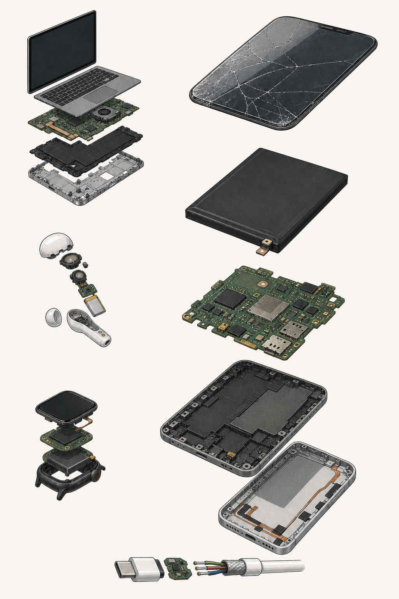
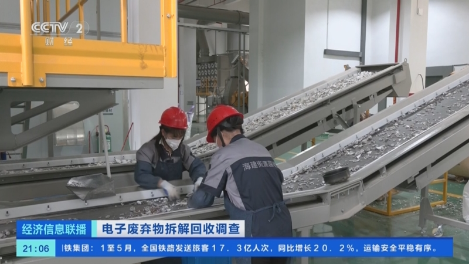
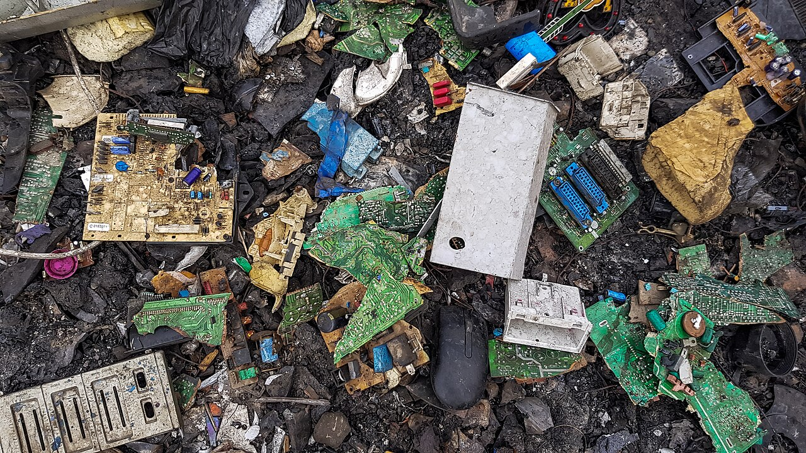
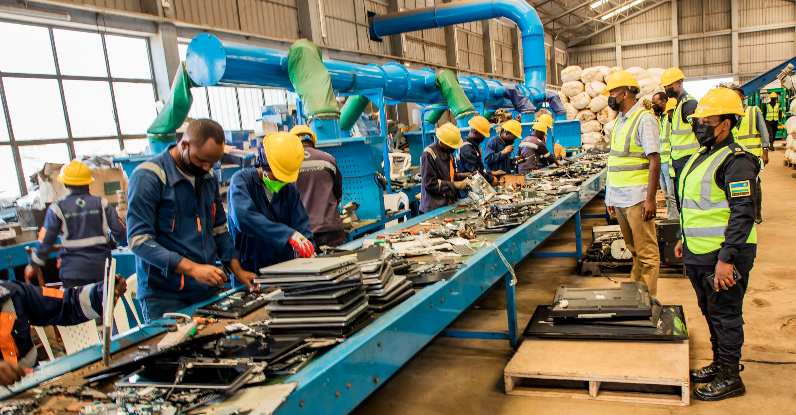
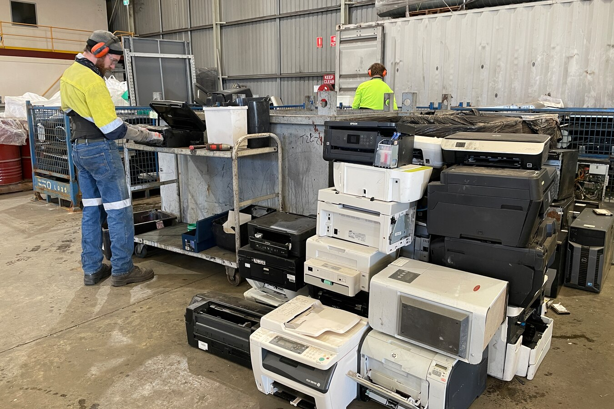
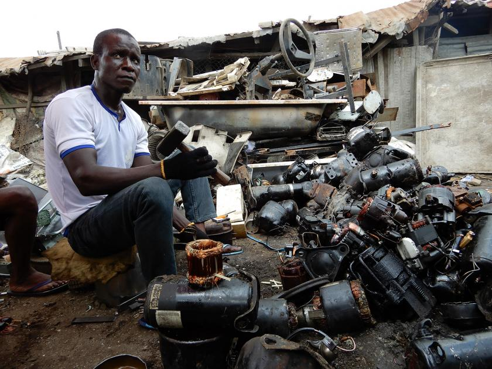

全球份额 19.5%
正式回收率 16%
01 / 全球
数字生活让照片、会议、票据和社交关系变轻，但设备本身从来没有变轻。它们只是更快地从新品变成旧物。
Global scale
2022 年，全球电子废弃物达到 6200 万吨，比 2010 年增加 82%。它不是一座突然出现的山，而是一条每年仍增加约 260 万吨的上升曲线。照此发展，2030 年总量将达到约 8200 万吨。
小型设备，占全部电子废弃物的 33%；被正式记录回收的只有 12%。
小型信息通信设备，包括手机、路由器和便携电脑；正式记录回收率为 22%。
退役光伏板从 2022 年到 2030 年的预计变化，八年间将增至 4 倍。
电子废弃物的增长速度，相对于被正式记录回收量的增长速度。
图中年份估算说明：2010 年与 2022 年采用报告值；2005、2015、2020 按 2010—2022 年平均增量回推或插值；2025、2026 按报告所述每年增加约 260 万吨外推，仅用于呈现趋势。
最庞大的废物流并不只来自手机和电脑。玩具、微波炉、吸尘器、电子烟等“小型设备”合计已经超过 2000 万吨。电子功能进入的物件越多，废弃物就越分散，也越难被原有回收体系捕捉。
换新发生在商店、平台和发布会上；废弃却发生在抽屉、仓库和街角。所谓“云端”的轻，依然要落在矿产、芯片、屏幕、电池与拆解者的身体上。
数据来源：联合国训练研究所（United Nations Institute for Training and Research）、国际电信联盟（International Telecommunication Union）《Global E-waste Monitor 2024》

数据来源：联合国训练研究所（United Nations Institute for Training and Research）、国际电信联盟（International Telecommunication Union）《Global E-waste Monitor 2024》。拆解图为物质路径示意，不代表单台设备的材料比例。
Material account
把设备拆开，所谓“电子垃圾”才显出真实形状：屏幕是玻璃与复合层，外壳连接塑料和金属，电池、主板、芯片与线缆则把更多材料压缩进几毫米厚的机身。
同一份报告估算，2022 年电子废弃物中含有约 3100 万吨金属、1700 万吨塑料和 1400 万吨其他材料。它们并不一样容易被取回：贵金属集中在主板和芯片，塑料、玻璃与复合材料却更难完整分离。
问题不只是“有没有价值”，而是谁能安全地把价值取出来。当正规回收缺席，最值钱的部分会被迅速剥离，污染、残渣与健康风险却留在拆解链条的末端。
Global distribution / 2022
电子废弃物并不平均落在地图上。亚洲产生量接近全球一半，正式回收率却只有 12%；欧洲总量不到亚洲的一半，正式回收率达到 43%。制造、消费和回收记录叠在一起，才显出真正的全球分布。
一台设备离开正规回收链后，并不会从世界上消失，只会从统计中消失。点击各洲，看废弃速度是否已经越过回收能力。
数据来源：全球电子废弃物统计伙伴关系（Global E-waste Statistics Partnership）2022 年各洲与国家数据。全球份额按各洲数据合计 6190.8 万吨计算；《Global E-waste Monitor 2024》正文将其取整为 6200 万吨。地图圆点表示各洲产生量，横条分别表示国家占全球份额与正式回收率。
Global voices
电子产品由跨国供应链制造，废弃后却常由一座城市、一个社区甚至一个家庭独自承担。不同国家的制度起点并不相同，但公开呼声正在汇向同一个问题：谁把设备推向市场，谁就不能在设备报废时离场。
从“送进正规渠道”到“生产者负责”，再到禁止焚烧和混入生活垃圾，政策语言正在改变电子废弃物的定义。它不再只是消费者扔掉的旧物，而是一笔必须沿供应链向前追溯的公共责任。
“引导废电器进入正规渠道进行拆解和回收利用。”
——生态环境部

“每一台设备都重要。报告你的电子垃圾，让我们负责任地处理。”
——加纳环境保护署 GH Waste“既要看到电子废弃物对下一代的影响，也要把这个问题转化为循环经济的机会。”
——信息通信技术与创新部长 Paula Ingabire

“每个人都有责任，包括制造它、销售它和使用它的人。”
——气候变化、能源、环境与水资源部法规明确禁止露天焚烧电子废弃物，也禁止将其与生活垃圾一同处置。
——国家环境标准与法规执行局